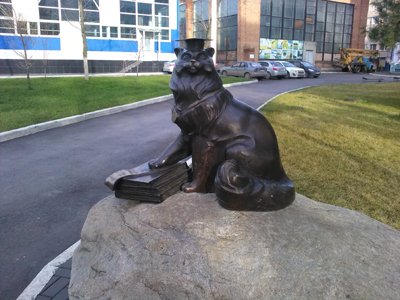
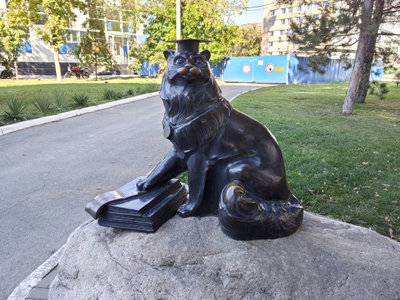

Кот Ученый


Люблю кошек и не могу пройти мимо того, что с ними связано. Поэтому, осенью 2017 года едва увидев новости об открытии этой скульптуры, решил обязательно сходить и посмотреть своими глазами, а заодно и фото сделать. Побывал я возле памятника вскоре после его открытия. Запечатлел, так сказать, свеженьким.
Скульптура находится на территории Донского государственного технического университета (ДГТУ). Сделана она там же: авторство эскиза принадлежит выпускнику университета Евгению Осипову, а изготовлена скульптура была тогдашними студентами в цехах университета. Задумывалась она как памятник Коту Ученому и как студенческий талисман — не зря лапка кота лежит на зачетной книжке. Если верить примете, нужно поднести к коту свою зачетку, погладить кота и потереть его шапочку — тогда шанс получить высокую оценку на экзамене станет выше. А еще говорят, что местные студенты к зиме порой делают для котика теплые свитера.


Свежее фото сделано в сентябре 2026 года. Скульптура, к счастью, в отличном состоянии. Не заметно, чтобы ей доводилось пострадать от рук вандалов. Только некоторые места выглядят особенно «золотыми» и блестящими — но это уже, очевидно, от рук студентов, приходивших к памятнику за экзаменационной удачей.
Задний план несколько изменился. Слева в кадре видно здание университетского бассейна. В 2017 году правее было видно строение из кирпича и стекла. Но некоторое время назад его снесли и теперь на том месте видно только синий забор. Интересно, что было с тем зданием не так, и будет ли построено что-то вместо него? Мне это не известно. Но главное, что памятник Коту Ученому по-прежнему на своем месте.